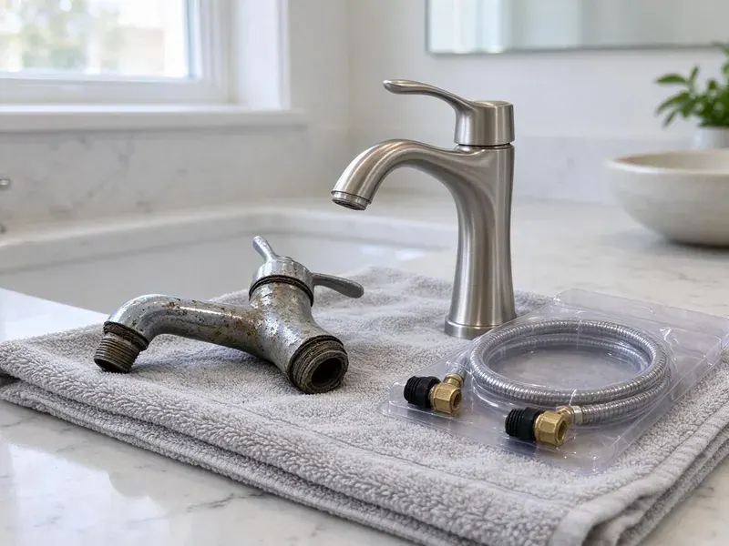

Sewer Replacement in Cleveland, OH
Sewage smell in the yard or a soggy spot over the line? That is often a cracked sewer pipe. We replace them in Cleveland, OH.
- Prompt Scheduling
- Trenchless Pipe Bursting
- Camera Footage Included
- Licensed Plumbers
End Recurring Backups With Sewer Replacement in Cleveland, OH.
Ask whether trenchless fits your yard.
New Sewer Laterals for Cleveland, OH Homes
HRL Plumbing does the parts people forget. Utility marks come first. The permit gets pulled, the inspector sees the open trench, and the connection to the city tap or septic inlet is made with the right fitting for the pipe it meets, so the new line and the old main actually seal.
Some of what we do:
- Belly and offset joint correction
- Trenchless pipe bursting with HDPE
- Swapping clay and cast iron for solid-wall PVC

Additional Plumbing Replacement Services in Cleveland, OH
When repairs are no longer enough, our replacement services in Cleveland, OH deliver modern, efficient equipment installed right.


Customers
Why Choose HRL Plumbing for Sewer Replacement in Cleveland, OH?
Repair or replace is a real question. A single cracked section can be fixed with a spot repair. When the camera shows breaks every few feet, roots at most joints, or a belly holding water, the full line beats years of repairs. We tell you which it is.
- Licensed Plumbers, Our crews are fully licensed and carry insurance for sewer work.
- Permits Pulled, The permit is ours to file and schedule the inspection before the trench is closed.
- Camera First, We run a camera and show you the footage before we quote the job.
Citywide Coverage
We replace sewer lines in every part of Cleveland, from older neighborhoods still on clay pipe to newer subdivisions where a builder skimped on bedding. Each lot gets its own plan. Camera work is usually this week.
Experienced Team
We train on the camera as much as the shovel. Reading sewer footage is a skill. Knowing the difference between a belly, an offset joint and a crushed section is what separates a $900 repair from a full replacement. We get it right.
Safety-First Approach
Trench walls collapse without warning. We keep spoil at least two feet back from the edge, use a trench box or slope the walls on deeper digs, and never let anyone work in an unprotected deep trench. Rules exist for good reason.
Trusted Certified Cleveland Plumbing Services Professionals
At HRL Plumbing, we take pride in licensed, certified plumbing services throughout Cleveland, OH. Credentials matter in this trade. Every repair, install and maintenance visit follows strict safety and quality rules, and the plumbers doing the work carry recognized industry credentials.
Call Us Now PHCC Plumbing Contractor Recognition
PHCC Plumbing Contractor Recognition Better Business Bureau (BBB) Accreditation
Better Business Bureau (BBB) Accreditation Angi Certified Pro
Angi Certified Pro ISO 9001 Quality Management Certification
ISO 9001 Quality Management CertificationWhat Goes Into a Sewer Replacement in Cleveland, OH
Open-Trench Sewer Replacement in Cleveland, OH
Trenching lets us fix grade. That is its big advantage. When an old line has a sag that holds water and solids, bursting would just follow the same sag, while a trench lets us lay new pipe at the right pitch. Bellies disappear.

Under-Slab Sewer Replacement in Cleveland
Sewer pipe under a slab is the hardest kind to reach. There are two options. We can cut and remove a strip of floor inside the house and patch it after, or dig a tunnel beneath the foundation from the yard, and the right choice depends on the length of the run, the flooring, and what sits above the pipe.
Sewer Cleanout Installation in Cleveland, OH
A lot of older houses have no outside cleanout. Every clog then means pulling a toilet. When we replace a sewer line we add a two-way cleanout near the foundation, with a cap at ground level you can find, so future cleaning or camera work is quick and cheap.
Emergency Sewer Replacement in Cleveland, OH
Sewage in the house cannot wait. Call (740) 449-7505. We open the cleanout to relieve pressure, camera the line to find the break, and make a section repair when that is enough to get the house working, with a plan and a price for the full line if the camera shows more trouble.
Traditional Sewer Line Replacement in Cleveland
Digging is still the right method for a lot of lines. A collapsed pipe cannot guide a bursting head. Sharp bends, a belly that needs regrading, or a route that should change all point toward an open trench, and we leave the yard as close to how we found it as dirt allows. Grass grows back.
Advanced Diagnostics for Sewer Issues in Cleveland, OH
Diagnosis comes before price. The camera shows what is wrong, the locator shows where. We sometimes add a hydro-jet cleaning first, because a line full of grease can hide a crack, then camera again so we are looking at the pipe itself. Guesswork costs money.
Foundation Protection during Sewer Replacement in Cleveland, OH
Tree roots and shifting clay often crack older clay or cast iron sewer laterals, leading to slow drains and backups. A sewer leaking under or beside the house keeps the soil wet in one spot, and that uneven moisture can push or settle part of a slab. When we replace a line near the foundation we dig carefully, avoid undermining footings, and tamp each layer of fill. Slow work near the house.

Sewer Line Material Upgrades in Cleveland
Clay, cast iron and Orangeburg all failed for different reasons. PVC avoids all three of those problems. Schedule 40 or SDR 35 PVC is what most codes call for on a lateral, and we match the grade to the depth and load over the pipe. Glued joints stay sealed.
Sewer Line Replacement Near Cleveland, OH
Our crews work on sewer lines across Cleveland every week. Neighbors usually have the same pipe material, since streets were built together. If the house next door had clay pipe full of roots, yours probably does too, which gives us a good guess before we scope. Patterns help.
Need sewer replacement near you? Tell us where the backup shows up and how often. That points us to the likely problem, and a camera in Cleveland confirms it in under an hour on most homes, which keeps the job honest.
HRL Plumbing at a Glance
- Licensed and insured plumbers serving Cleveland, OH
- 24/7 emergency service with same-day scheduling
- Upfront, flat-rate pricing before work begins
- 4.9-star rated by 673+ Ohio customers
Cleveland Map
Cleveland Information
- Population
- 362,656
- Area codes
- 216/440/330
- Service area
- Cleveland and towns within a 40 mile drive
- Nearby
- Lakewood, Parma, Euclid, Cuyahoga Falls
Old cast iron, clay and Orangeburg pipe, plus roots and settling soil, are why so many sewer laterals in Cleveland, OH need replacing.
Expert Services
Call HRL Plumbing for honest, reliable plumbing from people who know the trade in Cleveland, OH.
Our Specialized Plumbing Services in Cleveland, OH
At HRL Plumbing, we handle the full list of plumbing services across Cleveland, OH. We go from leak detection all the way to full system installations, for homes and commercial buildings, and we do it quickly at a fair price. Explore our core services below:


Our Sewer Replacement Process in Cleveland, OH
Here is how a sewer replacement goes from first call to final camera pass.
Call and Describe It
Call (740) 449-7505 and tell us what you are seeing. Which drain backs up first and how often helps a lot.
Camera and Locate
We scope the line from the cleanout and mark the problem spots from the yard in Cleveland.
Permit and Locates
We file the permit and call 811. Nothing gets dug until the marks are down.
Frequently Asked Questions About Sewer Replacement in Cleveland
Most sewer replacements run $4,500 to $12,000, with length, depth and method setting the price. Bursting jobs commonly land between $6,000 and $15,000. Under-slab work can cost even more.
No. The old line has to have a path to follow. A fully collapsed section, a sharp bend, or rock around the pipe can rule it out, and a belly cannot be fixed by bursting since the new pipe follows the same sag, so an open trench is better for grade problems. Camera first.
Repeated backups, gurgling and sewage smell. A scope showing cracks seals it.
Solid-wall PVC for open trench work, in Schedule 40 or SDR 35. Fused HDPE is the standard for pipe bursting because it can be pulled a long way without joints, and ABS or cast iron show up where local code or existing plumbing calls for them. All rated for burial.
Yes, nearly always. A plumbing permit and an inspection are standard. They look at slope, bedding, cleanouts and the tie-in to the main, and we handle the paperwork, fees and scheduling. You keep the signed copy.
Rarely a good idea. It needs permits, locates and correct grade. A homeowner can dig, but getting a quarter inch per foot of fall over 60 feet, tying into the city main with the right fitting, and passing inspection is harder than it looks, and mistakes mean digging again.
Technically, maybe. It needs a permit, locates and correct slope.
You could dig it. Passing inspection is the hard part. Grade has to be steady over the full run, bedding has to support the pipe, and the tie-in to the main has to seal, while every buried utility in the yard has to be avoided. Errors mean re-digging.
Hear From Customers Who Hired Our Plumbing Experts

Emily R.
The shutoff valve under our kitchen sink snapped off in my hand on a Sunday morning. HRL Plumbing had someone out by early afternoon. He replaced both angle stops with quarter turn valves and showed me where our main shutoff was, which I honestly did not know.
Plumbing Repair · Cleveland, OH
Paul B.
Our pit pump ran nonstop even in dry weather. The plumber found the check valve was stuck open, so the same water kept cycling back into the pit. New valve, new float switch, done in an hour. It runs quiet now.
Sump Pump · Mentor, OH
Diane F.
My kitchen faucet had dripped for months and I finally got tired of hearing it at night. HRL Plumbing came out the next morning, replaced the cartridge and the O rings, and tightened a loose base that was letting water under the sink.
Faucet Repair · Mentor, OHAngela D.
Our sump pump quit during a storm and the water was an inch from the basement carpet. HRL Plumbing put in a new pump with a battery backup that same evening. We have had two heavy rains since. It kicked on both times.
Sump Pump · Elyria, OHGreg S.
I manage a small strip center with six tenants. HRL Plumbing handles our annual backflow testing and fixed a recurring clog in the shared sewer line that had been backing into the nail salon. Their reports come in clean and on time.
Commercial Plumbing · Lakewood, OH
Laura S.
Our 40 gallon tank started leaking from the bottom after thirteen years. The tech hauled the old one out, set a new unit with a fresh expansion tank, and had hot water running in about four hours. He took the old tank with him too.
Water Heater Replacement · Elyria, OH